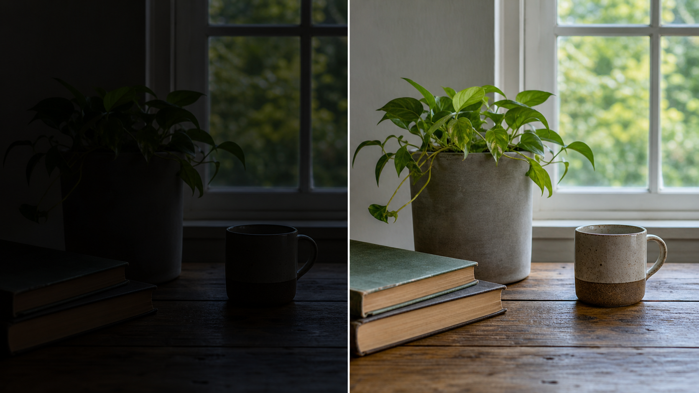

明暗与对比
亮度/对比度调整：提亮照片并恢复暗部细节
当照片整体偏暗、暗部细节被压住时，可以使用 亮度/对比度调整图层 来提亮画面，并通过对比度让照片看起来更清晰或更柔和。

核心思路：先用亮度把隐藏在暗部里的信息拉出来，再根据画面状态微调对比度。画面灰、发闷时可以增加对比度；反差已经很强时可以降低对比度，避免亮部和暗部过硬。
适用场景
- 照片曝光偏暗，但仍有可恢复的暗部细节。
- 照片整体发灰，需要增加明暗差异。
- 照片反差太强，需要稍微压低对比，让细节更容易看清。
操作步骤
- 在 Photoshop 中打开需要调整的照片。
- 新建一个“亮度/对比度”调整图层。
- 提高亮度，让暗部中的主体、纹理和环境信息显现出来。
- 根据照片状态调整对比度：画面过灰就提高对比度，画面反差过强就降低对比度。
- 观察整体效果，避免只盯着局部导致画面变得不自然。
学习要点
- 调整图层是非破坏式编辑。 它不会直接改动原图，后续可以随时重新调整参数。
- 亮度解决“看不清”的问题。 它主要影响照片整体明暗，适合先把暗部信息拉出来。
- 对比度解决“层次感”的问题。 提高对比会让明暗差更明显，降低对比会让过硬的影调变柔和。
- 不要只追求变亮。 提亮过度会让照片发灰、失去氛围，也可能让亮部显得刺眼。